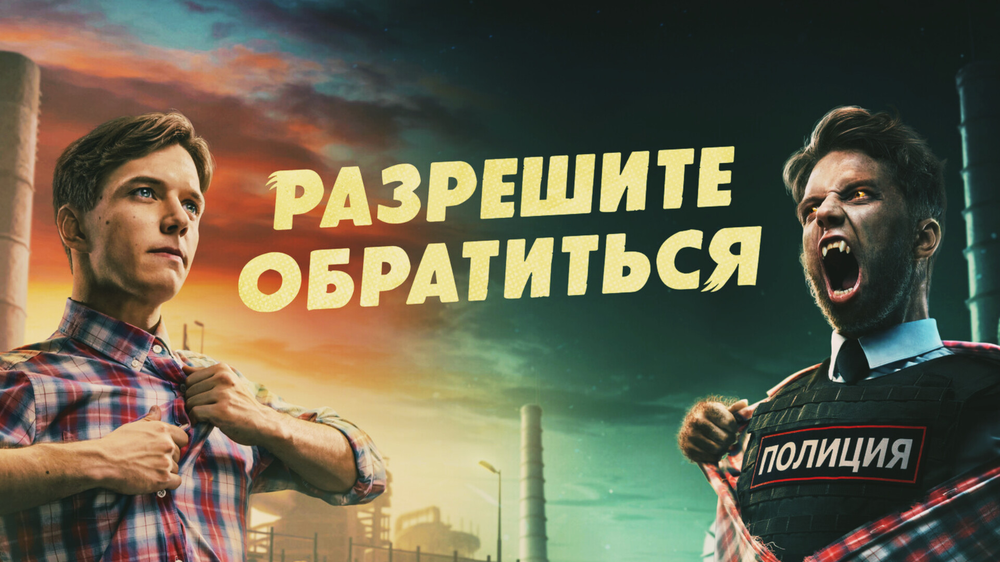

"Разрешите обратиться"

Обзор
Гоша Котов с детства мечтал стать таким же крутым полицейским, каким его отец был в девяностые. Но от природы он очень робкий, поэтому ловить преступников так, как это делают супергерои, у него не получается. Все меняется, когда Гошу кусает зараженная собака. Он становится оборотнем - невероятно сильным и ловким, и это обстоятельство придает ему огромную уверенность в себе. Гоша начинает активно бороться с преступностью, а также решать свои личные проблемы. Ему - оборотню с добрым сердцем - предстоит пройти испытание властью, завоевать любовь и осознать, что большая сила — это и большая ответственность.
О сериале
| Год производства | 2023 (1 сезон) |
| Платформа | Иви |
| Страна | Россия |
| Жанр | комедия, фэнтези, боевик, криминал |
| Режиссер | Илья Ермолов |
| Цифровой релиз | 20 июля 2023, «Иви» |
| Возраст | 18+ |
В главных ролях
- Андрей Гальченко
- Даня Киселёв
- Анна Завтур
- Никита Волков
- Елена Валюшкина
- Ростислав Бершауэр
- Ян Цапник
- Евгений Санников
- Александра Киселева
- Роман Евдокимов